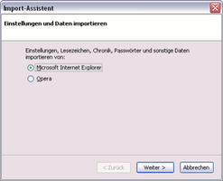
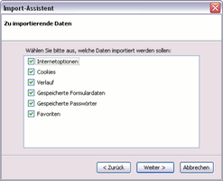

Internet Explorer
Diese Anleitung beschreibt, wie man unter Windows mit Hilfe von Firefox Daten des Internet Explorers importieren kann. Dieser Schritt ist eine wichtige Voraussetzung, um später die vorhandenen Daten einfach unter Linux weiternutzen zu können. Firefox kann über die Projektseite  heruntergeladen und installiert werden.
heruntergeladen und installiert werden.
Import unter Windows¶
Daten mit Firefox importieren¶
Wurde Firefox neu installiert, erscheint beim ersten Start der Import-Assistent. Bei einer bestehenden Installation kann dieser über "Datei -> Importieren..." gestartet werden.
In dem sich nun öffnenden Menü wählt man den "Microsoft Internet Explorer" aus, aund klickt anschließend auf "Weiter". Nun kann man auswählen, welche Daten man importieren möchte. Um das Ausgewählte zu importieren, muss man die Schaltfläche "Weiter" betätigen und zum Schluss auf "Fertigstellen" klicken.
|  |
| Browser auswählen |
|  |
| Daten auswählen |
Firefox unter Ubuntu¶
Hier muss man die Daten von Firefox aus Windows einfach nur importieren bzw. kopieren. Details sind im Artikel Mozilla plattformübergreifend nutzen zu finden.
Lesezeichen-Import mit anderen Browsern¶
Andere Browser unter Ubuntu haben eigene Import-Module - in der Regel aber nur für die Lesezeichen. Wie man die Lesezeichen des Internet Explorers importiert, findet man in den jeweiligen Anleitungen:
Ggf. muss aber trotzdem den eingangs beschriebenen Umweg über Mozilla Firefox gehen, da einige Browser nur Daten aus dem Mozilla-Browser importieren können.
Internet-Verknüpfungen direkt aufrufen¶
Um mit dem Internet Explorer erstellte .url-Dateien direkt aufrufen, ist ein kleines Shell-Skript erforderlich. Dieses kann z.B. unter ~/bin/open_ie_link.sh (zur Nutzung durch den aktuellen Benutzer) oder /usr/local/bin/open_ie_link.sh (zur systemweiten Nutzung; muss dann mit Root-Rechten erstellt werden) gespeichert werden:
#!/bin/sh
xdg-open $(awk -F "=" '/^URL/ { print $2 }' "$1")Anschließend muss diese Datei ausführbar gemacht werden, z.B. im Terminal mit:
chmod u+x ~/bin/open_ie_link.sh
bzw.
sudo chmod a+x /usr/local/bin/open_ie_link.sh
bei systemweiter Nutzung.
Anschließend lässt sich mit Hilfe des Dateimanagers und der Funktion "Öffnen mit..." als benutzerdefinierter Befehl open_ie_link.sh zum Öffnen von .url-Dateien auswählen. Ein alternativer Ansatz ist im Blogbeitrag Öffnen von Windows *.url Dateien unter Linux (12/2013) zu finden.
 Übersichtsartikel
Übersichtsartikel- Erstellt mit Inyoka
-
 2004 – 2017 ubuntuusers.de • Einige Rechte vorbehalten
2004 – 2017 ubuntuusers.de • Einige Rechte vorbehalten
Lizenz • Kontakt • Datenschutz • Impressum • Serverstatus -
Serverhousing gespendet von